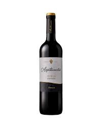
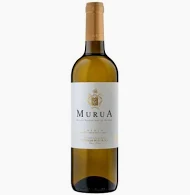
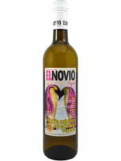
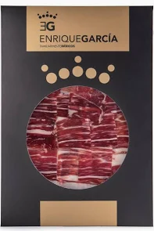
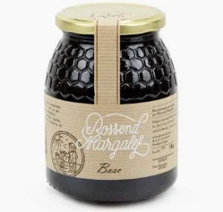

Reserva 2018
Aromas a frutos rojos y madera. Ideal para carnes rojas y guisos.

En Bodegas González elaboramos vinos y seleccionamos productos gourmet que representan la esencia de nuestra tierra: sabor, calidad y tradición familiar.
Aromas a frutos rojos y madera. Ideal para carnes rojas y guisos.

Equilibrado y con cuerpo medio. Perfecto para quesos curados.

Fresco y afrutado. Ideal con tapas y platos ligeros.

Notas cítricas y florales. Final suave y persistente.

Aromático, ligero y equilibrado. Perfecto para mariscos.

Toques dulces y acidez equilibrada. Ideal para postres.
Además de nuestros vinos, ofrecemos una selección de productos artesanales elaborados en nuestra región.

Sabor intenso y textura firme, elaborado con leche de oveja manchega.

Curación tradicional y sabor profundo.

Prensado en frío, con notas herbales.

100% natural, recogida de colmenas locales.
Crema suave y sabrosa, ideal para tapas.
Descubre cómo elaboramos nuestros vinos desde el viñedo hasta la copa.